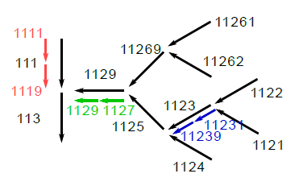

networktools¶
This module provides features for preparing HydPy networks based on different data.
-
class
hydpy.auxs.networktools.RiverBasinNumber[source]¶ Bases:
strA single river basin number (Gewässerkennzahl) based on a guideline of the German organisation LAWA.
See Länderarbeitsgemeinschaft Wasser: Richtlinie für die Gebietsbezeichung und die Verschlüsselung von Fließgewässern (1970)
Note that zero fill numbers are ignored:
>>> RiverBasinNumber(1230) RiverBasinNumber(123) >>> RiverBasinNumber('0123') RiverBasinNumber(123)
Numbers that cannot be interpreted as a river basin numbers, result in the following error message:
>>> RiverBasinNumber('123A') Traceback (most recent call last): ... ValueError: The given value `123A` could not be interpreted as a river basin number.
-
is_rivermouth¶ Only true if the river basin number ends with 9.
>>> from hydpy import RiverBasinNumber >>> RiverBasinNumber(129).is_rivermouth True >>> RiverBasinNumber(123).is_rivermouth False
-
is_mainchannel¶ Only true if the river basin number ends with an odd number.
>>> from hydpy import RiverBasinNumber >>> for number in range(120, 130): ... rbn = RiverBasinNumber(number) ... print(number, rbn, rbn.is_mainchannel) 120 12 False 121 121 True 122 122 False 123 123 True 124 124 False 125 125 True 126 126 False 127 127 True 128 128 False 129 129 True
-
is_tributary¶ Only true if the river basin number ends with an even number.
>>> from hydpy import RiverBasinNumber >>> for number in range(120, 130): ... rbn = RiverBasinNumber(number) ... print(number, rbn, rbn.is_tributary) 120 12 True 121 121 False 122 122 True 123 123 False 124 124 True 125 125 False 126 126 True 127 127 False 128 128 True 129 129 False
-
possible_next_initial_digits¶ Return a tuple of all potential candidates for the next downstream river basin number.
I think, only the first and the last returned candidate should be of relevance. But to return all possible intermediate candidates might be safer river basin number specifications I am not taking into account at the moment.
The candidate numbers might be incomplete. For example, the next number downstream of 123 could be 1251 instead of 125.
>>> from hydpy import RiverBasinNumber >>> for number in range(120, 130): ... rbn = RiverBasinNumber(number) ... print(number, rbn, rbn.possible_next_initial_digits) 120 12 ('13', '15', '17', '19') 121 121 ('123', '125', '127', '129') 122 122 ('123', '125', '127', '129') 123 123 ('125', '127', '129') 124 124 ('125', '127', '129') 125 125 ('127', '129') 126 126 ('127', '129') 127 127 ('129',) 128 128 ('129',) 129 129 ('13', '15', '17', '19')
-
nmb_digits¶ Number of (significant) digits of a river basin number.
>>> from hydpy import RiverBasinNumber >>> RiverBasinNumber(120).nmb_digits 2
-
-
class
hydpy.auxs.networktools.RiverBasinNumbers[source]¶ Bases:
tupleA sorted collection of
RiverBasinNumberobjects.>>> from hydpy import RiverBasinNumbers >>> RiverBasinNumbers((111, 113, 1129, 11269, 1125, 11261, ... 11262, 1123, 1124, 1122, 1121)) RiverBasinNumbers((111, 1121, 1122, 1123, 1124, 1125, 11261, 11262, 11269, 1129, 113))
-
next_numbers¶ A tuple of the next downstream river basin numbers.
The order of the returned numbers corresponds to the order of the numbers contained by the
RiverBasinNumbersobject.The number of the subcatchment immediately downstream of the outlet subcatchment is not known. The tuple contains a
Noneobject instead (or multipleNoneobjects in case of multiple outlets).Eventually, not all possible combinations of river basin numbers are covered. Please keep us informed if you notices a problem when applying this algorithm on your data. At least, the algorithm works properly on the following test case provided by Michael Wagner (TU Dresden):
At first, only the black arrows are considered, exemplifying the basic definition of river basin numbers:
>>> from hydpy import RiverBasinNumbers >>> rbns = RiverBasinNumbers((111, 113, 1129, 11269, 1125, 11261, ... 11262, 1123, 1124, 1122, 1121)) >>> for this_rbn, next_rbn in zip(rbns, rbns.next_numbers): ... print(this_rbn.ljust(6), next_rbn) 111 113 1121 1123 1122 1123 1123 1125 1124 1125 1125 1129 11261 11269 11262 11269 11269 1129 1129 113 113 None
The coloured arrows exemplify the situation, where some additional subdivisions become necessary:
>>> from hydpy import RiverBasinNumbers >>> rbns = RiverBasinNumbers((1111, 1119, 113, 1129, 1127, ... 11269, 1125, 11261, 11262, 11239, ... 11231, 1124, 1122, 1121)) >>> for this_rbn, next_rbn in zip(rbns, rbns.next_numbers): ... print(this_rbn.ljust(6), next_rbn) 1111 1119 1119 113 1121 11231 1122 11231 11231 11239 11239 1125 1124 1125 1125 1127 11261 11269 11262 11269 11269 1127 1127 1129 1129 113 113 None
-
-
class
hydpy.auxs.networktools.RiverBasinNumbers2Selection(numbers)[source]¶ Bases:
objectClass for defining a
Selectionobject (consisting of connected nodes and elements) based on givenRiverBasinNumberobjects.Note that this class is not intended to cover all possible HydPy networks. So it might be necessary to make some adjustments on the returned selection, e.g. to define special names for specific elements or nodes.
All examples of the methods and propertys of
RiverBasinNumbers2Selectionare based on the river basin numbers defined in the documentation on classRiverBasinNumbers.-
supplier_elements¶ A
Elementscollection of all “supplying” basins.(All river basins are assumed to supply something to the downstream basin.)
>>> from hydpy import RiverBasinNumbers2Selection >>> rbns2s = RiverBasinNumbers2Selection( ... (111, 113, 1129, 11269, 1125, 11261, ... 11262, 1123, 1124, 1122, 1121))
The following elements are properly connected to the required outlet nodes already:
>>> for element in rbns2s.supplier_elements: ... print(repr(element)) Element("land_111", outlets="node_113") Element("land_1121", outlets="node_1123") Element("land_1122", outlets="node_1123") Element("land_1123", outlets="node_1125") Element("land_1124", outlets="node_1125") Element("land_1125", outlets="node_1129") Element("land_11261", outlets="node_11269") Element("land_11262", outlets="node_11269") Element("land_11269", outlets="node_1129") Element("land_1129", outlets="node_113") Element("land_113", outlets="node_outlet")
It is both possible to change the prefix names of the elements and nodes, as long as it results in a valid variable name (e.g. does not start with a number):
>>> rbns2s.supplier_prefix = 'a_' >>> rbns2s.node_prefix = 'b_' >>> rbns2s.supplier_elements Elements("a_111", "a_1121", "a_1122", "a_1123", "a_1124", "a_1125", "a_11261", "a_11262", "a_11269", "a_1129", "a_113")
-
router_elements¶ A
Elementscollection of all “routing” basins.(Only river basins with a upstream basin are assumed to route something to the downstream basin.)
>>> from hydpy import RiverBasinNumbers2Selection >>> rbns2s = RiverBasinNumbers2Selection( ... (111, 113, 1129, 11269, 1125, 11261, ... 11262, 1123, 1124, 1122, 1121))
The following elements are properly connected to the required inlet and outlet nodes already:
>>> for element in rbns2s.router_elements: ... print(repr(element)) Element("stream_1123", inlets="node_1123", outlets="node_1125") Element("stream_1125", inlets="node_1125", outlets="node_1129") Element("stream_11269", inlets="node_11269", outlets="node_1129") Element("stream_1129", inlets="node_1129", outlets="node_113") Element("stream_113", inlets="node_113", outlets="node_outlet")
It is both possible to change the prefix names of the elements and nodes, as long as it results in a valid variable name (e.g. does not start with a number):
>>> rbns2s.router_prefix = 'c_' >>> rbns2s.node_prefix = 'd_' >>> rbns2s.router_elements Elements("c_1123", "c_1125", "c_11269", "c_1129", "c_113")
-
elements¶ Both the “supplying” and the “routing” elements.
-
nodes¶ A
Nodescollection of all required nodes.>>> from hydpy import RiverBasinNumbers2Selection >>> rbns2s = RiverBasinNumbers2Selection( ... (111, 113, 1129, 11269, 1125, 11261, ... 11262, 1123, 1124, 1122, 1121))
Note that the required outlet node is added:
>>> rbns2s.nodes Nodes("node_1123", "node_1125", "node_11269", "node_1129", "node_113", "node_outlet")
It is both possible to change the prefix names of the nodes and the name of the outlet node separately:
>>> rbns2s.node_prefix = 'b_' >>> rbns2s.last_node = 'l_node' >>> rbns2s.nodes Nodes("b_1123", "b_1125", "b_11269", "b_1129", "b_113", "l_node")
-
selection¶ A complete
Selectionobject of all “supplying” and “routing” elements and required nodes.>>> from hydpy import RiverBasinNumbers2Selection >>> rbns2s = RiverBasinNumbers2Selection( ... (111, 113, 1129, 11269, 1125, 11261, ... 11262, 1123, 1124, 1122, 1121)) >>> rbns2s.selection Selection("complete", elements=("land_111", "land_1121", "land_1122", "land_1123", "land_1124", "land_1125", "land_11261", "land_11262", "land_11269", "land_1129", "land_113", "stream_1123", "stream_1125", "stream_11269", "stream_1129", "stream_113"), nodes=("node_1123", "node_1125", "node_11269", "node_1129", "node_113", "node_outlet"))
Besides the possible modifications on the names of the different nodes and elements, the name of the selection can be set differently:
>>> rbns2s.selection_name = 'sel' >>> from hydpy import pub >>> with pub.options.ellipsis(1): ... print(repr(rbns2s.selection)) Selection("sel", elements=("land_111", ...,"stream_113"), nodes=("node_1123", ...,"node_outlet"))
-